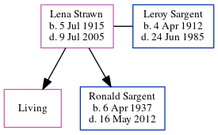

Hilda Mary Coombs (née Packman) 1896 - c1934
[ Home ] | [ Calendar ] | [ Surnames Index ] | [ Errors ] | [ Family History ]Hilda Packman, the wife of Nelson Victor Coombs (the second cousin twice-removed on the mother's side of Nigel Horne), was born in 18961. She married Nelson (an agricultural labourer) at Christ Church, Dunkirk, Kent, England on 11 Nov 19222.
She died c. Feb 1934 in Canterbury, Kent, England1.
Citations
- England & Wales deaths 1837-2007 - Findmypast
- England Marriages 1538-1973 - Findmypast
Media
Canterbury Marriages Image - GBPRS-CANT-005265413-00228
England Marriages 1538-1973 Transcription - R_848275873
England & Wales marriages 1837-2008 Transcription - BMD-M-1922-4-AZ-000224-049
England & Wales deaths 1837-2007 - BMD/D/1934/1/AZ/000210/076
Family Tree
Map
Generated by ged2site. Last updated on Jul 3, 2024
Known Issues
Date of birth is known, but not place
No records of living with anyone